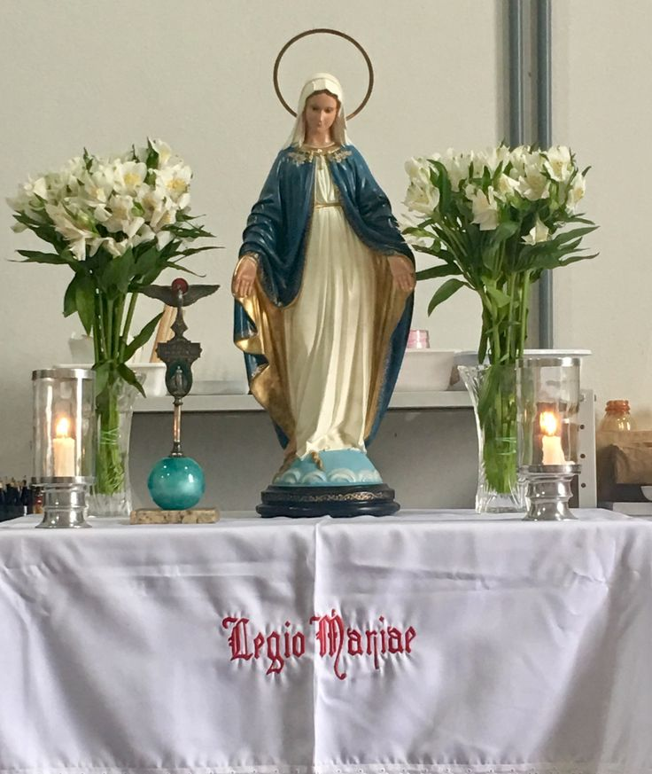

Every Tuesday at 7:00 PM
Weekly duration: Approx. 75–90 minutesSt. Benedict Catholic Parish
300 Yates Drive, Milton, ON L9T 2W3 (Nursia Room)St. Benedict & Holy Rosary
Welcoming Catholic parishioners from across MiltonA worldwide lay Catholic association serving the Church under the guidance of Mary Immaculate and the sanction of the ecclesiastical hierarchy.
The Legion of Mary is a lay apostolic association of Catholics who, with the sanction of the Church and under the powerful leadership of Mary Immaculate, Mediatrix of All Graces, serve the Church and their neighboring community on a voluntary basis in about 170 countries.
In Milton, Ontario, Our Lady of Fatima Praesidium unites members from both Holy Rosary Parish and St. Benedict of Nursia Parish. The basic unit of the Legion is called a praesidium, which holds a weekly meeting and allocates substantial apostolic tasks to its members, who always work in pairs under the spiritual direction of our parish clergy.
The object of the Legion of Mary is the glory of God through the holiness of its members developed by prayer and active co-operation in Mary's and the Church's work of advancing the reign of Christ.
Legionary service is grounded in the doctrine of the Mystical Body of Christ: in every person encountered—whether sick, lonely, lapsed, or inquiring—legionaries seek to behold and serve the Person of Jesus Christ through the maternal care of Mary, His Mother.
"He who seeks graces without Mary is attempting to fly without wings. True devotion to Mary consists in giving oneself entirely to her, in order to belong entirely to Jesus through her."— St. Louis-Marie Grignion de Montfort, Inspiration of the Legion Spirit
Every Tuesday at 7:00 PM in St. Benedict's Church Nursia Room, members gather around the Altar of Mary for spiritual renewal, accountability, and apostolic mission.

The Official Legion AltarThe standard model of the Miraculous Medal representation, expressing Mary's maternal mediation and crushing the serpent.
The Roman military standard baptized for Christ: the Holy Spirit dove above, the oval medallion of Mary, and the globe below.
Signifying living faith, purity of intention, and reverence for the Queen of the Legion during the entire meeting.
Embroidered with the Legion motto: "Legio Mariae", symbolizing the clean table of fraternal charity and prayer.
Kneeling before the Altar, members invoke the Holy Spirit, recite the Apostles' Creed, and pray 5 decades of the Rosary for our parish intentions.
Reading from the Legion Handbook or spiritual classic, followed by confirmation of previous minutes and the Treasurer’s statement.
Each pair of active legionaries reports on their assigned apostolic visits. At midway, all stand to recite the Catena Legionis (Magnificat).
Spiritual Director or President gives an instructional allocutio. New works are assigned for the week, ending with Concluding Prayers and blessing.
Our Lady of Fatima Praesidium is a united ministry drawing dedicated active and auxiliary members from both Catholic parishes in Milton.
Every active member is assigned a weekly spiritual work by the praesidium president, performed in pairs with love, humility, and absolute discretion.
Accompanying the blessed statue of Our Lady of Fatima to family homes in Milton for a week stay, introducing or deepening family Rosary devotion.
Visiting the elderly, sick, and lonely in their homes, Milton retirement residences, and nursing care centers, bringing prayer, holy communion,conversation, and Miraculous Medals.
Assisting our parish priests with outreach to newly registered families and baptismal follow-up, helping newcomers integrate into parish sacramental life.
Keeping in regular, warm contact with our Auxiliary (praying) members, providing them with Legion news, annual reunion invitations, and spiritual encouragement.
Distributing Catholic pamphlets, rosaries, Miraculous Medals, and apologetics books at parish events to gently encourage personal inquiry and Catholic faith.
Leading and coordinating the First Saturday Rosary of Reparation requested by Our Lady of Fatima for world peace and the conversion of hearts.
Every Catholic can join the Legion! Whether called to active field apostolate or the vital power-house of daily intercessory prayer.
Active members who also commit to: (1) Daily recitation of all Tessera prayers; (2) Daily Holy Mass & Communion; (3) Daily recitation of an approved Office (e.g., Liturgy of the Hours).
Auxiliary members who, in addition to the daily Rosary and Tessera, attend daily Mass, receive Holy Communion, and recite an approved Divine Office.
Not sure which membership type suits your schedule?
Invite the Blessed Mother into your household for a blessed week visitation of prayer, peace, and family blessings.
The Pilgrim Virgin Statue program brings a blessed statue of Our Lady of Fatima into Catholic homes in Milton to foster the family Rosary and bring heavenly peace into the domestic church.
Invite the Divine Mercy Image into your household for a blessed 9 days Novena prayer, peace, and family blessings.
The Divine Mercy Image program brings the image of Our Lord into Catholic homes in Milton to foster the family Prayer and bring heavenly peace into the domestic church.
Please fill out your details to schedule a visit for your family.
Have the Sacred Heart of Jesus enthroned in your household for a blessed visitation of prayer, peace, and family blessings.
The image of the Sacred Heart of Jesus comes into Catholic homes in Milton to foster the family prayer and bring heavenly peace into the domestic church.
Please fill out your details to schedule a visit for your family.
The official prayer leaflet issued to every member of the Legion of Mary across the globe—the token of fraternity and constant union in prayer.
In the name of the Father, and of the Son, and of the Holy Spirit. Amen.
v. Come, O Holy Spirit, fill the hearts of Your faithful, and enkindle in them the fire of Your love.
v. Send forth Your Spirit and they shall be created.
R. And You shall renew the face of the earth.
Let us pray:
O God, Who by the light of the Holy Spirit did instruct the hearts of the faithful, grant that in the same Spirit we may be truly wise, and ever rejoice in His consolation, through Christ our Lord. Amen.
v. You, O Lord, will open my lips.
R. And my tongue shall announce Your praise.
v. Incline unto my aid, O God.
R. O Lord, make haste to help me.
v. Glory be to the Father, and to the Son, and to the Holy Spirit.
R. As it was in the beginning, is now, and ever shall be, world without end. Amen.
Followed by the Salve Regina (Hail, Holy Queen) and the invocation:
Hail, Holy Queen, Mother of Mercy, our life, our sweetness and our hope! To thee do we cry, poor banished children of Eve; to thee do we send up our sighs, mourning and weeping in this valley of tears. Turn then, most gracious advocate, thine eyes of mercy toward us, and after this our exile, show unto us the blessed fruit of thy womb, Jesus. O clement, O loving, O sweet Virgin Mary.
v. Pray for us, O Holy Mother of God.
R. That we may be made worthy of the promises of Christ.
Three heroic legionaries whose causes for canonization have been introduced in the Church.
Founded the Legion in Dublin, Ireland on September 7, 1921. He served the poorest of the poor and attended the Second Vatican Council as an honored Lay Observer. Cause introduced in 1996.
Despite severe tuberculosis, she traveled thousands of miles across Kenya, Tanzania, and Uganda establishing hundreds of praesidia with joyful, heroic charity. Declared Venerable in 1994.
Known as "El Corderito" (The Little Lamb), Alfie planted the Legion across Colombia, Ecuador, Uruguay, Brazil, and Argentina with youthful zeal and humility before dying at age 26.
Special celebrations that unite legionaries in Milton throughout the year.
The great annual function where all active and auxiliary members gather to renew their solemn consecration: "I am all yours, my Queen and my Mother, and all that I have is yours."
Our praesidium's patronal feast day! Celebrated with a parish Rosary, Holy Mass of Thanksgiving, and consecration of our Milton families.
Commemorating the founding of the Legion of Mary in 1921 on the eve of Our Lady's Nativity, celebrated with prayer and social gathering.
A festive social gathering around the Feast of the Immaculate Conception bringing together active and auxiliary members with their families.
Intresting links to Marian Devotion and Prayers which interests legionaries.
A short history of the Legion of Mary.
Our Lady has feasts and dedications throughtout the year
Marian Antiphons are ancient Latin Gregorian chant hymns. Each antiphon corresponds to a specific time of the liturgical year.
A festive collections of Hymns dedicated to Mother Mary.
Whether you would like to attend a meeting as an observer, become an auxiliary prayer partner, request prayers, or ask about our ministry, we welcome you with open hearts.
Submit your prayer intention to be remembered during our weekly Rosary and praesidium meeting.